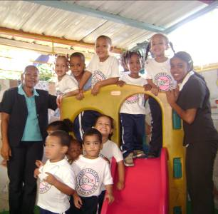
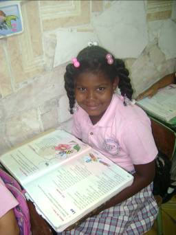
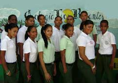

- EDUCACIÓN INICIAL
- (PRE-ESCOLAR)
- 
El Preescolar Los Rosantes busca integrar al niño desde la más temprana edad a la convivencia con su entorno familiar, escolar y social apoyándole a través de una atención personalizada para cada alumno en particular.
- Preparara al niño de cara a su ingreso en la educación primaria;
- Contribuir a su desarrollo físico, motriz, psíquico, cognitivo, afectivo, social, ético, estético y espiritual;
- Favorecer la integración del niño con la familia;
- Desarrollar la capacidad de comunicación y las relaciones con las demás personas;
- Desarrollar la creatividad;
- Respetar, estimular y aprovechar las actividades propias de edad;
- Desarrollar el inicio de valores y actitudes como la responsabilidad, la cooperación, la iniciativa, la higiene, la buena alimentación y la conservación del medio ambiente;
- Iniciar el desarrollo del sentido crítico.
- EDUCACIÓN BÁSICA
- (PRIMARIA)
- 
Completado el nivel inicial, el alumno posee las características idóneas para introducirse en la educación primaria a fin de adquirir los conocimientos objetivos que requerirá para su desenvolvimiento cotidiano y bajo los estándares que requiere la educación actual.
- Ofrecer a los alumnos los elementos culturales básicos;
- Desarrollar la dimensión ética y la formación cívica como base de la convivencia pacífica;
- Promover en los educandos la reflexión, la crítica, la autocrítica y la construcción de sus conocimientos;
- Desarrollar la capacidad de expresión en la lengua materna y el interés por la lectura;
- Ofrecer la oportunidad de adquirir los elementos básicos de dos de las lenguas extranjeras principales (inglés y francés);
- Garantizar el aprendizaje de las ciencias, haciendo énfasis en la observación, el análisis, la interpretación y la síntesis;
- Promover mayor interés por la investigación y los conocimientos científicos, tecnológicos y humanísticos, así como por la comunicación, la informática y por las distintas expresiones artísticas;
- EDUCACIÓN MEDIA
- ( BACHILLERATO)
- 
El bachillerato CELROS desea introducir jóvenes capaces de dar lo mejor de si a la sociedad aplicando los conocimientos éticos profesionales obtenidos durante su formación, para ello trabajamos con un personal capacitado especialmente es esta área y haciendo uso de las nuevas tecnologías y vinculando al alumno con las mismas.
- Objetivos:
- Fomentar la expresión en la lengua materna y el interés por la lectura;
- Afianzar los conocimientos de las lenguas extranjeras inglés y francés;
- Transmitir los criterios primordiales para el uso adecuado de las nuevas tecnologías;
- Desarrollar integralmente al estudiante mediante la atención de los aspectos familiares, biológicos, intelectuales, afectivos, sociales, éticos, morales y estéticos con una actitud positiva hacia la dignidad humana, el respeto al derecho de los demás y la convivencia pacífica.
- Proporcionar una formación integral mediante el progresivo desarrollo de la personalidad y la apropiación de nuevos y más profundos conocimientos que permitan a los estudiantes afianzar las bases para ingresar al Nivel Superior con posibilidades de éxito e interactuar responsablemente en la sociedad.
- Objetivos:
-
Objetivos: